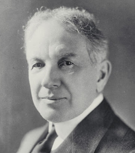

Transnational Corporations
|
The Role of Transnational Corporations in a Globalized World: A Look at Apple Inc.
Today, almost everyone knows the history of Apple Inc. Just to do a little bit of recap:
- Steve Jobs and Steve Wozniak founded the company in 1977 as a company that manufactures and develops consumer electronics, computer software, and commercial servers.
- With the successful introduction of the iPod in 2001, it became the leader in the consumer electronics industry.
- By the end of 2010, it had more than 300 retail stores in 10 countries and 3,000 employees worldwide.
- As of the end of 2019, its total net sales amounted to $260.17 billion in US dollars.
- Read this article for additional information.
- Like many transnational corporations, the company has outsourced some of its manufacturing to EPZs overseas to take advantage of cheaper labor costs and reduced corporation taxes.
- Outsourcing has contributed to Apple’s success in the global marketplace but has also opened up opportunities for unethical business practices. A supplier responsibility report released by Apple in 2011 identified unethical practices carried out by its suppliers. These include employing underage workers (this is criminal in North America) and discharging waste and toxic metals into the local environment posing a threat to public health. While these things happened in other countries
- These remain part of Apple’s global manufacturing process which makes them accountable in the end.
- As a solution, Apple issued a statement assuring customers that it is committed to ensuring safe working conditions in its supply chain; treating its workers with dignity and respect, and ensuring environmentally responsible manufacturing processes wherever Apple products are made.
Environmental Effects of Globalization
- In the race towards economic growth and productivity, globalization gave rise to environmental challenges such as climate change, water and air pollution, overfishing, and loss of biodiversity.
- To increase global output and increase profit, industries are rapidly depleting the earth’s natural resources: whether it is damming a river for hydroelectric power, mining for minerals and metals, or drilling for oil.
- Oftentimes, the foremost concern is cost efficiency while disregarding what is most environmentally friendly and sustainable.

- The recent years saw an increasing public awareness regarding the environmental effects of globalization.
- People are now asking themselves how the earth’s depleting resources will be managed to meet the demands of a constantly growing population.
The Effect of Transnational Corporations on Canadian Society: A Look at General Motors

- As a leading pioneer of the United States automobile industry, William C. Durant (1861-1947), founded General Motors (GM) in 1908.
- In response to the people’s increasing fascination with the automobile, GM became the industry leader, setting the benchmark for production, design, and marketing innovation.
- Just like any other TNCs, GM has moved its production off-shore such as in Canada, China, and Brazil, while retaining its headquarters in the US.
- When the major global recession hit in 2008 which drove car sales down, GM filed for bankruptcy.
- GM of Canada responded by cutting 6,000 jobs from an already diminished workforce and shutting down 300 GM dealerships across the country (42% of the total) further cutting another 14,000 jobs.
- These cuts made by GM Canada meant that fewer cars were being manufactured in Canada.
- As a result, 18,000 people working in the parts sector of the automotive industry lost their jobs.
- Such actions by GM Canada had wide-reaching effects on the economy.
Multiple Choice
Multiple Choice
Multiple Choice
Multiple Choice
Multiple Choice